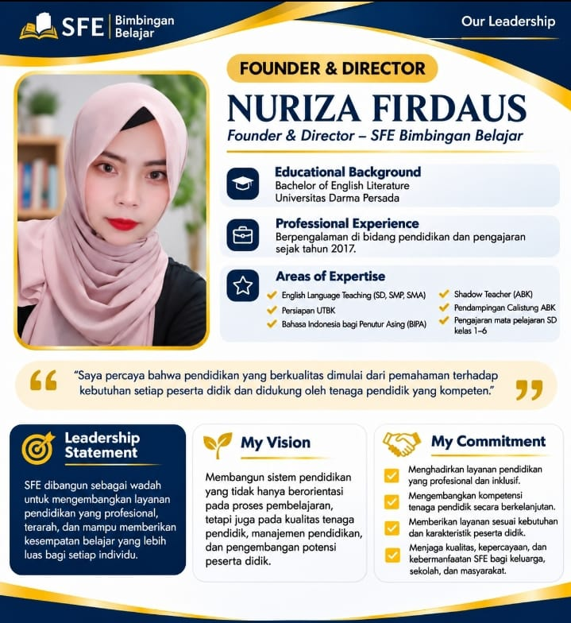
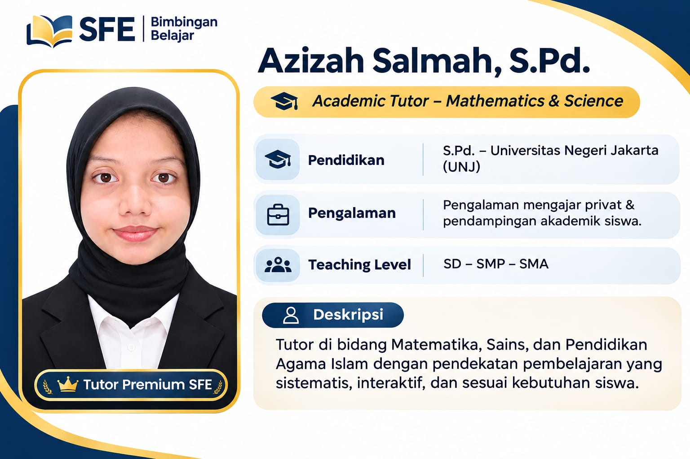
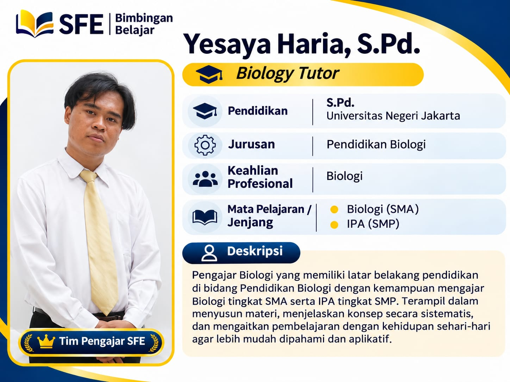

SFE Bimbingan Belajar - Profil Resmi
Didukung oleh tim manajemen yang terorganisasi dan tenaga pendidik dari berbagai bidang keahlian[cite: 16].

Sentuh atau sorot kursor untuk menghentikan guliran otomatis.


Jadilah bagian dari tim pendidik profesional SFE dan berkontribusi dalam mendukung perkembangan peserta didik di seluruh Indonesia[cite: 16].